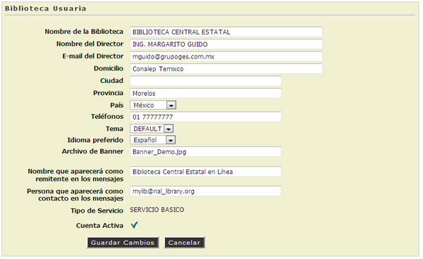

5.1. Datos de la Entidad Usuaria.
En esta opción el Adminsitrador del Sistema podrá Configurar los datos requeridos de la ubicación de la Biblioteca, cambio de aspecto visual, tales como Temas, Banners e Idiomas.
- Escribir el Nombre de la Biblioteca.
- Escribir el Nombre del Director de la Institución.
- Escribir el E-mail de Director de la Institución.
- Escribir la Dirección Completa donde se localiza la Biblioteca.
- Escribir la Ciudad donde se localiza la Biblioteca.
- Escribir la Provincia o Municipio donde se localiza la Biblioteca.
- "Seleccionar" el País donde se localiza la Biblioteca.
- Escribir los Teléfonos disponibes de la Biblioteca.

- "Seleccionar" el Tema preferido para mostrar a los usuarios de la Biblioteca.
- Si el Usuario no elige algún Tema en especifico, aparecera el Tema por Default.
- Temas Disponibes:
- Serio
- Green
- Pink
- Bubbles
- Yellow
- Elegant
- "Seleccionar" el Idioma Preferido. (Español, English, Portugués)
- Escribir el Nombre del Archivo del Banner a mostrar.
- El Sistema contiene 9 archivos de banner diferentes para la presentacion del Sistema.
- Archivos:
- Banner_demo.jpg
- Banner_serio.jpg
- Banner_green.jpg
- Banner_pink.jpg
- Banner_bubles.jpg
- Banner_blue.jpg
- Banner_yellow.jpg
- Banner_elegant.jpg
- Banner_formal.jpg

- Hacer "Clic" en la opción [Guardar Cambios].
- El Sistema automáticamente tomará la apariencia que se eligió, Tema y Banner seleccionados.